大学物理 AI 智慧课堂是一个面向课程教学的工作台，学生端与教师端共用一套账号和课程结构。全部功能在浏览器中运行，打开网址即可使用，无需安装客户端。
账号决定进入哪一侧工作台。系统提供两个演示账号，也支持自行注册。
| 账号 | 口令 | 进入后 |
|---|---|---|
student | dunzhongwan | 学生端 · 学习总览 |
teacher | dunzhongwan | 教师端 · 教学驾驶舱 |
演示账号的用户名在注册时被保留，避免与自建账号重名。自建账号在登录页切换到「注册新账号」即可创建，角色在注册时选定，登录后不可切换。
| 项目 | 建议 |
|---|---|
| 浏览器 | Chrome、Edge 或 Safari 的近两年版本 |
| 窗口宽度 | 1280 像素以上；小于该宽度时侧栏会挤压内容区 |
| 网络 | 工作台与预置课堂可离线使用；AI 助教与课堂生成需要联网 |
| 本地存储 | 需允许本站使用 Cookie 与本地存储，否则登录态与学习记录无法保存 |
两侧界面结构一致，分三个区域。
按 ⌘K（Windows 为 Ctrl+K）可唤出命令面板，输入视图名或动作名直接跳转，不必逐级点击。
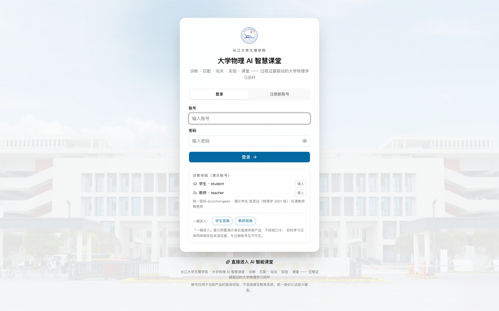
图 1 登录页：左侧为品牌与演示账号提示，右侧为登录 / 注册页签打开站点后默认进入登录页。右侧页签停在「登录」，输入用户名与口令，点击「登录」即可。登录成功后按账号角色进入对应工作台，学生落在学习总览，教师落在教学驾驶舱。
账号或口令错误时统一提示「账号或密码不正确」，不区分是哪一项，避免暴露账号是否存在。连续输错不会锁定账号，可以重新输入。
切到「注册新账号」页签，填写三项信息：用户名、口令、角色。
| 字段 | 规则 |
|---|---|
| 用户名 | 3–32 个字符，可用字母、数字、下划线、连字符与中文 |
| 口令 | 至少 8 位，区分大小写 |
| 角色 | 学生或教师，注册后不可更改 |
用户名重复、使用了演示账号名、口令过短，这三种情况都会当场给出提示，按提示修改即可。注册成功后自动登录并进入对应工作台。
退出入口在左侧导航底部。点击后清除本机会话，回到登录页。学习记录不会随退出删除，用同一账号重新登录即可继续。
切换角色需要先退出，再用另一角色的账号登录。直接用学生账号访问教师路径会被送回学生端首页，反之亦然。
学生端八个视图按学习顺序排列，第一次使用建议从学习总览开始，按提示逐步推进。
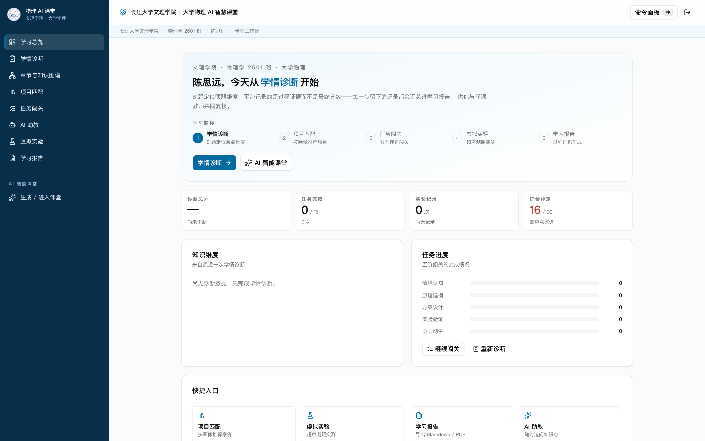
图 2 学习总览：本周任务、诊断结论与下一步入口集中在一屏这一页负责回答「现在该做什么」。顶部是本周任务与完成进度，中部是最近一次诊断的结论，右侧给出一个下一步入口：未做诊断时指向诊断，已诊断未选项目时指向项目匹配，选了项目则指向任务闯关。
如果同时存在多个待办，入口按优先级只显示一个，其余在下方列表中排列。这样做的目的是减少选择成本，不需要每次都想「先做哪个」。
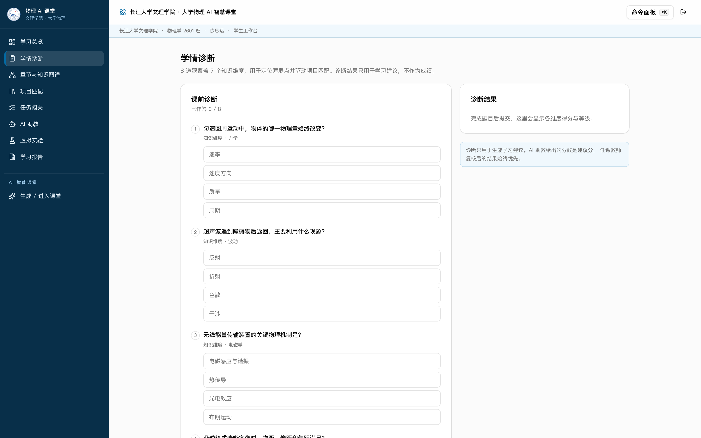
图 3 学情诊断：八道前测题，提交后生成七维画像八道题覆盖力学模块的七个知识维度，全部为选择题，作答后统一提交。提交后右侧出现雷达图与维度列表，每个维度给出掌握度，低于阈值的维度标红。
诊断结果直接决定项目匹配的排序权重，因此建议在选项目之前完成。诊断可以重做，重做会覆盖当前结果，但会保留一份 24 小时内的快照，页面上的「恢复上次结果」可以退回。
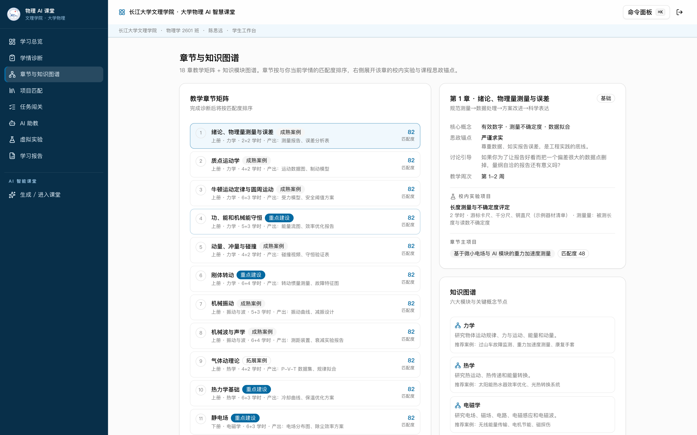
图 4 章节与知识图谱：章节、概念、项目三种视角顶部三个页签对应三种视角。章节视角按教材顺序排列，适合按进度查找；概念视角按依赖关系布局，适合看清先修关系；项目视角把项目挂到它用到的概念上。
想知道「这个项目为什么排在我前面」，切到概念视角最直观：项目覆盖的概念与你标红的维度重合越多，排序越靠前。
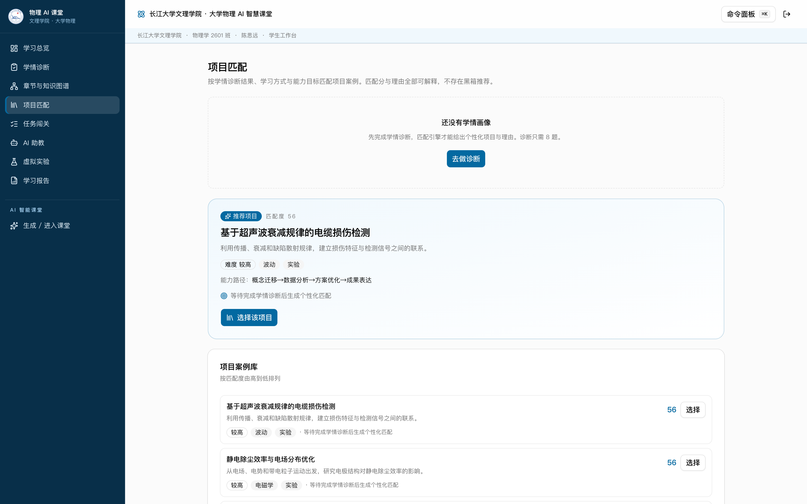
图 5 项目匹配：按匹配度排序，卡片写明推荐理由列表默认按匹配度排序，匹配度由薄弱维度、学习方式、项目能力目标三项加权得出。每张卡片写明推荐理由，而不是只给一个分数。
对当前批次不满意，点「换一批」重新排序。选定后点「加入我的项目」，该项目随即出现在任务闯关与课程矩阵中。
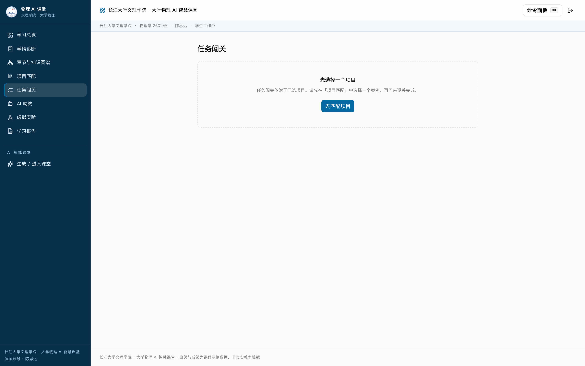
图 6 任务闯关：五阶关卡，逐题提交即时判分一个项目拆成五关，每关若干题。选择答案后提交，立即显示对错与解析，答错的题会标出，便于回头复习。全部完成后本关记录写入学习报告。
进度存在本地，中途离开不会丢失。需要重做某一关，点关卡右上角的「重置本关」，确认后清空该关记录。
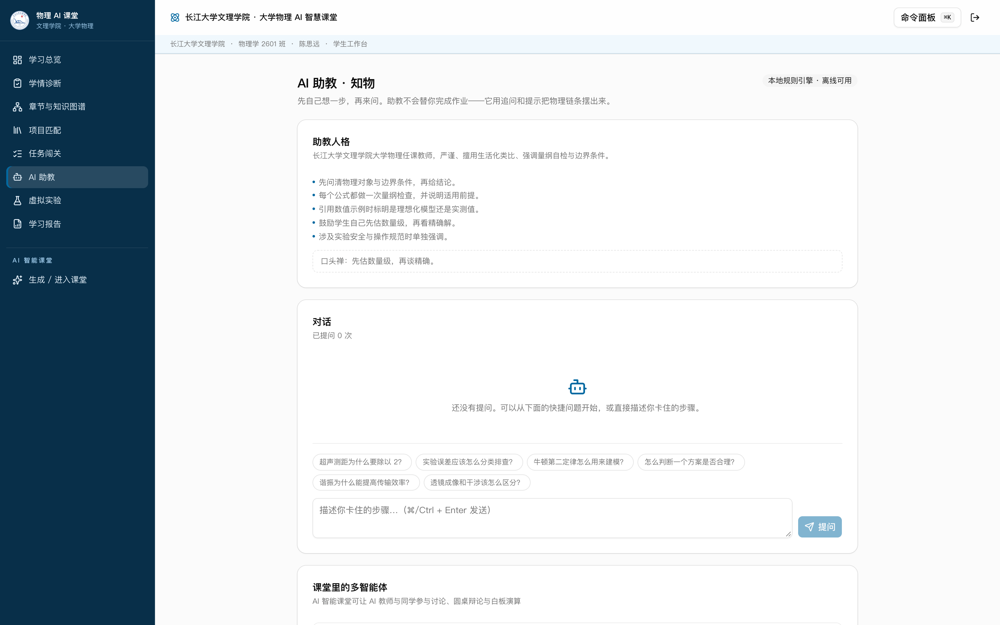
图 7 AI 助教：围绕当前章节提问，回答附引用助教自动带入当前章节的上下文，提问时不必重复背景。回答下方列出引用段落，点击可查看原文，便于核对结论来源。
这个视图需要联网。网络不可用时会给出提示，其他视图不受影响。
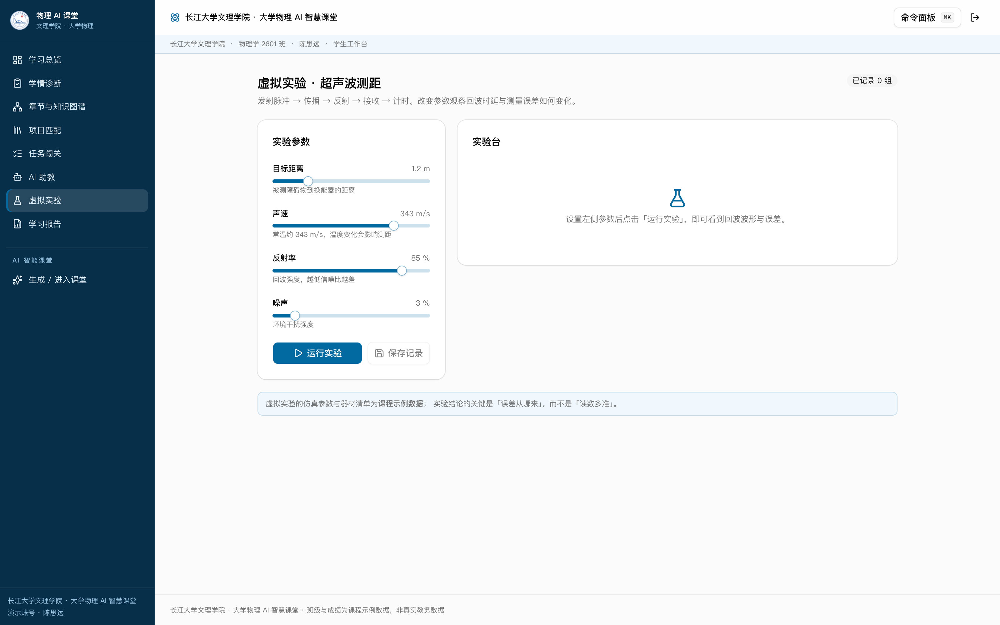
图 8 虚拟实验：拖动参数，现象与读数同步变化左侧是参数滑块，右侧是实验现象与实时读数。拖动滑块，曲线与数字同步变化，不需要点「运行」。想让某一时刻的读数留存，点「记录一次」，当前数值写入下方测量表。
测量表可以清空重来，清空前会弹确认。导出的学习报告会带上这张表。
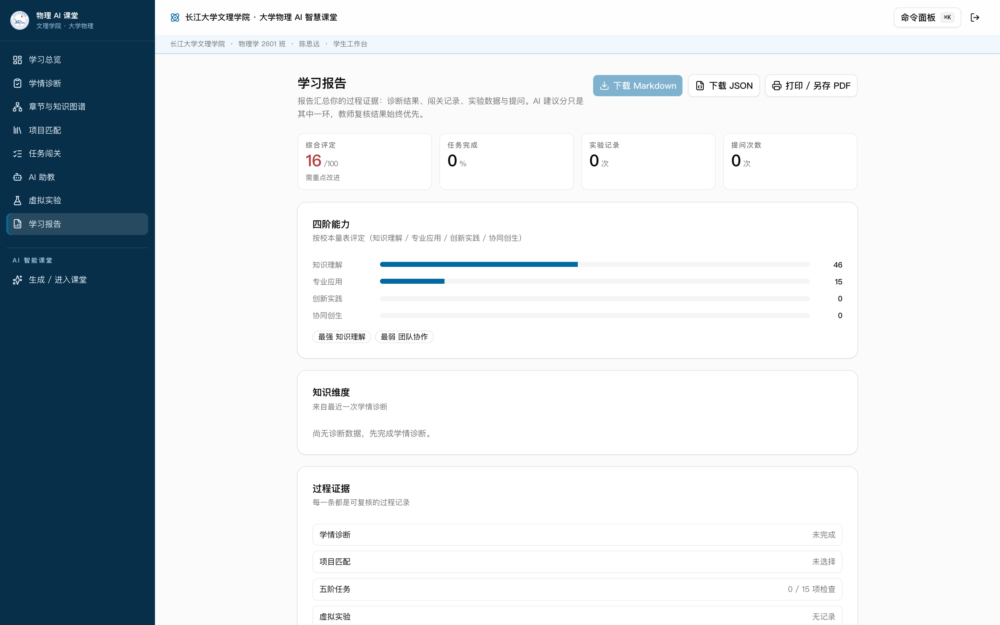
图 9 学习报告：汇总诊断、闯关、实验与问答四类证据报告按时间顺序汇总四类证据：诊断结论、闯关记录、实验测量、助教问答。每一类都可以展开查看明细。
底部「导出报告」生成一份 Markdown，含汇总表与明细，可直接提交或粘贴到作业中。
教师端五个视图对应一次完整的治理动作：定位、观察、对照、复核、调整。左侧导航的顺序即为建议顺序。
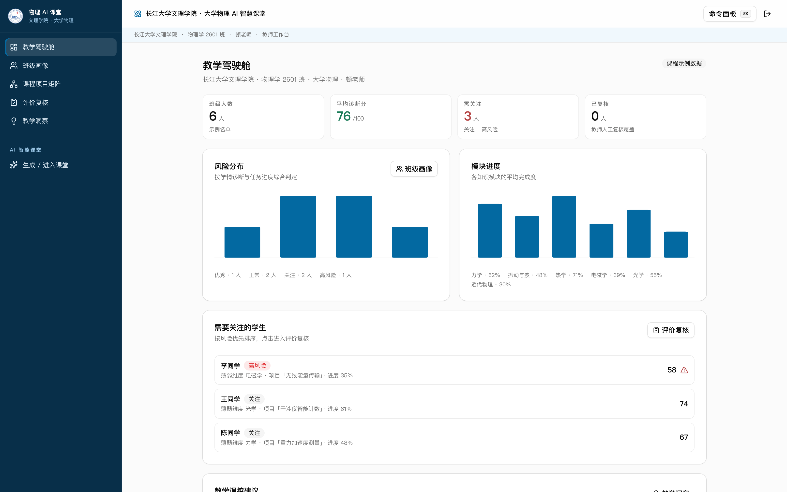
图 10 教学驾驶舱：风险学生与待办复核并列打开先看两张表。左侧是风险学生，按连续未完成任务与诊断掌握度下滑两个信号排序；右侧是待办复核，AI 已给出建议分，等待确认或改写。两张表的行都可以直接点进对应详情。
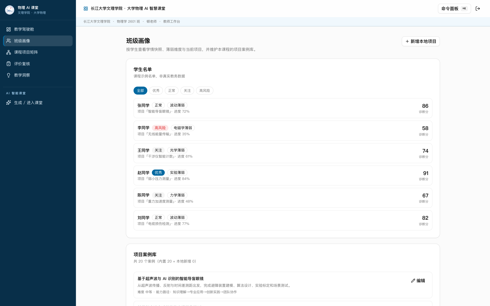
图 11 班级画像：按学生列出投入度与风险一行一名学生，四列分别是投入度、任务完成率、最近活跃与风险标记。点行展开，可看到该学生的诊断维度与最近三次闯关记录。表头支持排序，按风险排序最常用。
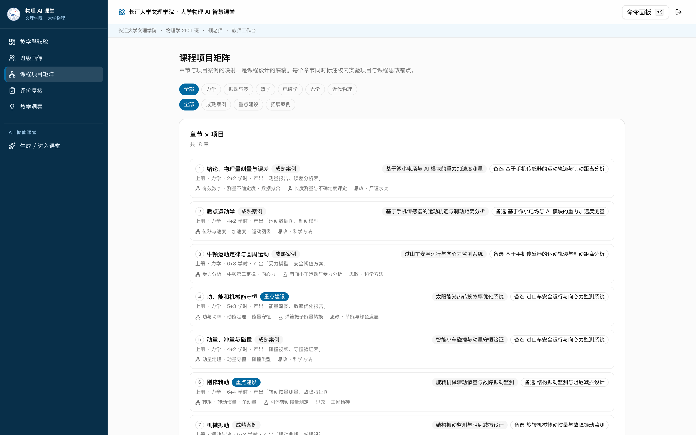
图 12 课程项目矩阵：章节与项目的对应关系横轴是章节，纵轴是项目，交叉点标出项目覆盖的章节。用于判断两类问题：某一章是否没有项目覆盖，某个项目是否压了过多章节。
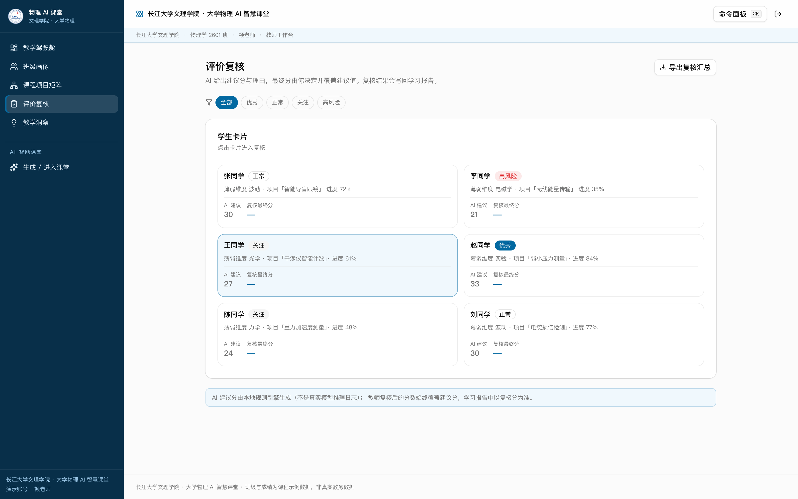
图 13 评价复核：改分、写理由，再导出汇总每行一名学生，左侧是 AI 建议分，右侧是复核分。修改复核分时必须填写理由，理由为空无法保存——这是刻意设计，复核要留下判断依据。
改完点行末「保存复核」，该行标记为已复核。全部处理完点右上角「导出复核汇总」，得到一份 教学评价复核-文理学院.md，包含复核分、理由与和建议分的差值。
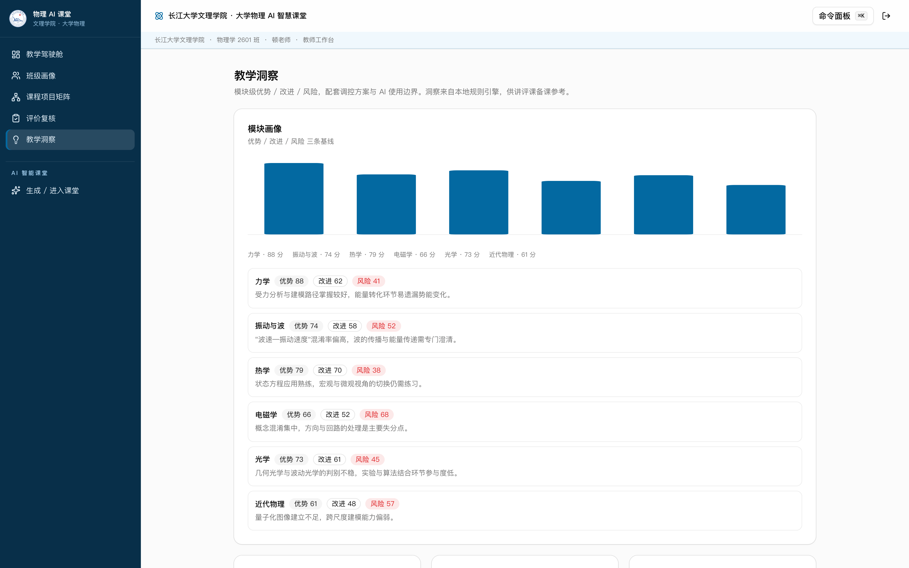
图 14 教学洞察：把班级数据聚成几条可执行建议这一页不堆图表，只给结论。每条建议写清针对的群体、依据的数据与可采取的调整，建议下方挂着原始数据入口，可以逐条核对。
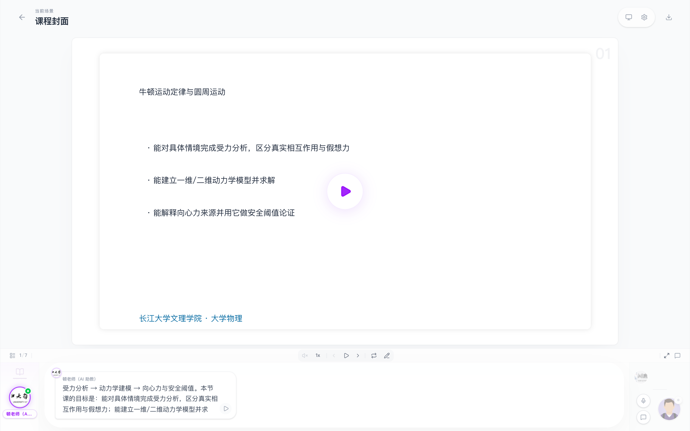
图 15 课堂播放器：场景切换、讲稿与画面同步从首页的预置课堂包卡片点进去，直接落到播放器。底部是场景条，可点击任意场景跳转；右侧是讲稿，随播放进度高亮当前段落。
播放、暂停、上一场景、下一场景都在底部控制条。播放器默认不自动播放，点播放键开始。
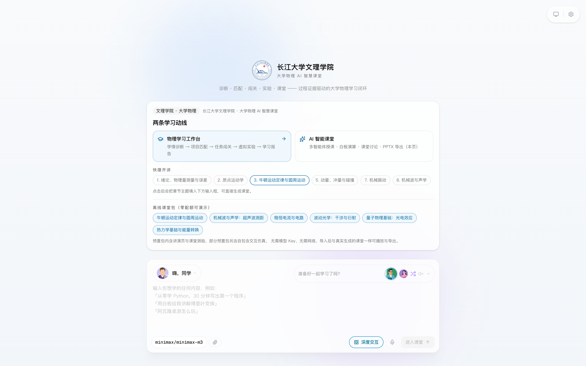
图 16 首页：上方为需求输入，下方为六个预置课堂包首页顶部输入框接受一句自然语言需求。可以只写章节，例如「大学物理 第三章 牛顿运动定律」；也可以补充要求，例如指定场景数量或需要包含的环节。写完点「进入课堂」，系统开始生成。
生成分四步：大纲、角色、逐场景内容、讲稿与动作。大纲以流式返回，十几秒后即可看到课程骨架，其余步骤在后台继续。页面会显示当前进行到哪一步。
| 步骤 | 你可以做什么 |
|---|---|
| 大纲 | 看到场景标题与要点后，可判断方向是否正确 |
| 角色 | 系统确定授课口吻，无需干预 |
| 逐场景内容 | 耗时最长，四路并行推进，页面显示已完成场景数 |
| 讲稿与动作 | 完成后自动进入播放器 |
生成期间不要关闭页面。已经生成的部分会保留，但当前这一轮会中断。想缩短等待，可以在需求里写明「只要 2 个场景」，场景越少越快。
系统有两处导出：学生端的学习报告、教师端的评价复核汇总，均为 Markdown 格式，点击按钮直接下载。
所有数据保存在浏览器本地，按账号分区，换账号看不到彼此的数据。换设备或换浏览器不会同步，需要迁移时只能在原浏览器中导出后手工整理。
清理浏览器缓存会清除本地数据。如果清理过缓存，需要重新注册或重新完成诊断。
| 操作 | 效果 |
|---|---|
⌘K / Ctrl+K | 打开命令面板，输入视图名直接跳转 |
G 后接视图首字母 | 快速切换视图，例如 G 再按 O 回到总览 |
? | 查看当前角色可用的快捷键清单 |
Esc | 关闭弹窗或命令面板 |
命令面板同时支持动作，例如「导出报告」「切换主题」，输入关键词即可筛选。
| 现象 | 原因与处理 |
|---|---|
| 登录后刷新回到登录页 | 浏览器禁用了本站 Cookie。允许后重新登录。 |
| 注册提示「这个账号是演示账号」 | student 与 teacher 保留给演示，换一个用户名。 |
| 点「进入课堂」后停在生成页 | 先看页面上的步骤提示停在哪一步。停在大纲多为网络问题，刷新重试；停在逐场景内容属正常耗时，等待即可。 |
| AI 助教没有回复 | 该视图需要联网。网络不可用时其他视图仍可正常使用。 |
| 评价复核保存不了 | 理由为空。填写一句判断依据后再保存。 |
| 页面显示不完整 | 窗口宽度小于 1280 像素。放大窗口或收起侧栏。 |
| 换了电脑看不到之前的数据 | 数据存在原浏览器的本地存储中。回到原设备，或先导出报告再迁移。 |
遇到上述之外的问题，记录浏览器控制台的报错与当前页面地址，比只描述「打不开」更有助于定位。
| 角色 | 视图 | 路由 | 核心动作 |
|---|---|---|---|
| 学生 | 学习总览 | /physics/overview | 查看待办并进入下一步 |
| 学生 | 学情诊断 | /physics/diagnosis | 作答八题，生成画像 |
| 学生 | 章节与知识图谱 | /physics/curriculum | 三视角浏览课程结构 |
| 学生 | 项目匹配 | /physics/projects | 挑选项目并加入 |
| 学生 | 任务闯关 | /physics/tasks | 逐题作答与判分 |
| 学生 | AI 助教 | /physics/assistant | 围绕章节提问 |
| 学生 | 虚拟实验 | /physics/lab | 调参、观察、记录测量 |
| 学生 | 学习报告 | /physics/report | 查看并导出报告 |
| 教师 | 教学驾驶舱 | /teacher/dashboard | 定位风险学生与待复核 |
| 教师 | 班级画像 | /teacher/class | 查看班级明细 |
| 教师 | 课程项目矩阵 | /teacher/curriculum | 核对目标与项目覆盖 |
| 教师 | 评价复核 | /teacher/evaluation | 改分、写理由、导出 |
| 教师 | 教学洞察 | /teacher/insights | 查看建议与依据 |